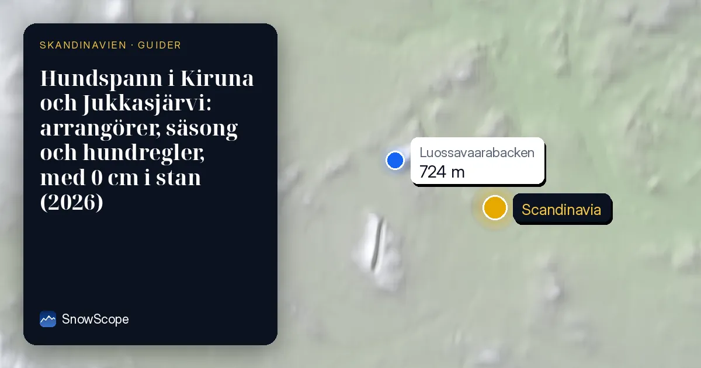

Hundspann i Kiruna och Jukkasjärvi: arrangörer, säsong och hundregler, med 0 cm i stan (2026)
Kiruna är känt för djup och tidig snö, men inte den här veckan. Den officiella väderstationen i stan, på 519 m, mätte 0 cm på morgonen den 13 november; Jukkasjärvi, 15 km österut vid Torne älv, också 0 cm, och likaså Esrange längre ut. Uppe vid norska gränsen hade Katterjåkk 9 cm. Planerar du en hundspannstur under andra halvan av november, hör alltså med arrangören: flera av dem startar snösäsongen kring mitten av november, men de behöver ett underlag på lederna.
Se snöprognosen för Scandinavia live i SnowScope-appenSnödjup, pudervarningar och 3D-kartan, gratis.

Arrangörer som Kiruna Lappland listar
Active Lapland kör en Morning Ride på ungefär 13 km för 1 800 SEK per person, och längre turer där du kör ditt eget spann. Kiruna Husky, vid Kalixforsbron, skriver att turerna oftast går från december till mars och att säsongen är öppen från mitten av november till mitten av april. Kiruna Sleddog Tours har en daglig tur på ungefär 2,5 timmar. Arctic Dogsled Adventures erbjuder en dagstur på ungefär 4,5 timmar inklusive transfer, där du kör ett spann med tre eller fyra hundar.
Alla är beroende av snö på sina egna leder. En sen start som den här brukar betyda kortare slingor i början, eller hjulvagnar några dagar till.
Korta dagar, sedan ingen sol
Ljuset försvinner snabbt här i november. I Kiruna är dagen ungefär 5 timmar lång den 15 november och under 3 timmar den 30 november. Från den 11 december till slutet av månaden går solen inte upp alls. Därför läggs förmiddagsturerna kring den ljusaste delen av dagen.
Din egen hund i snön
Enligt den nationella regeln i Sverige får hundar inte springa lösa där det kan finnas vilda djur mellan 1 mars och 20 augusti. På vintern gäller inte den regeln, men andra gör det. Ha hunden kopplad nära betande djur och i renbetesland, som omfattar hela Kirunaområdet. I nationalparker och naturreservat ska kopplet alltid vara på.
Två parker nära Kiruna har strängare regler: i Abisko och Vadvetjåkka nationalparker är hundar tillåtna bara från 1 januari till 30 april, kopplade. I Abisko får kopplade hundar använda vägarna, de markerade lederna och området runt turiststationen året runt. I stan kräver Kirunas lokala ordningsföreskrifter koppel i alla tättbebyggda områden och på skyltade gångvägar, och hundar är inte tillåtna i kommunens preparerade skidspår på vintern om inte en skylt säger något annat. Det finns en inhägnad hundrastgård på Kyrkogatan.
Tips för skidåkare
- Fråga din arrangör vad som händer om det fortfarande inte finns snö på lederna ditt datum: hjulvagnar, kortare slingor eller pengarna tillbaka.
- Ta med pannlampa och varma kängor även på en kort tur; kylan lägger sig i älvdalarna.
- Går du ut med din egen hund: håll dig borta från de preparerade skidspåren och ha kopplet på överallt där det kan finnas renar.
Referenser och källor
- SMHI, öppna data: dagligt snödjup vid svenska väderstationer www.smhi.se/data/meteorologi/ladda-ner-meteorologiska-observationer
- Kiruna Lappland, hundspann (officiell turistorganisation) kirunalapland.se/en/activities/dogsledding-drive-your-own-team/
- Active Lapland, Morning Ride www.activelapland.com/ourtrips/morning-ride/
- Kiruna Husky kirunahusky.com/
- Kiruna Sleddog Tours, vinterturer www.sleddog.se/winter-tours/
- Arctic Dogsled Adventures, hundspannsturer arcticdogsled.se/hundspannsturer/
- timeanddate, soluppgång och solnedgång i Kiruna, november och december 2026 www.timeanddate.com/sun/sweden/kiruna?month=11&year=2026
- Jordbruksverket, så sköter du din hund (lösa hundar 1 mars - 20 augusti) jordbruksverket.se/djur/hundar-katter-och-smadjur/hundar/sa-skoter-du-din-hund
- Naturvårdsverket, hundar i naturen (renbetesland, nationalparker, Abisko och Vadvetjåkka) www.naturvardsverket.se/amnesomraden/allemansratten/sa-gor-vi-allemansratt/hundar-i-naturen/
- Kiruna kommun, lokala ordningsföreskrifter (2023) kiruna.se/download/18.5107cd66188bdb2a38dde0f/1688377343780/Lokala%20ordningsf%C3%B6reskrifter%20f%C3%B6r%20Kiruna%20kommun%20Kf%20230619.pdf
- Kiruna kommun, parker och grönområden (hundrastgård) kiruna.se/uppleva--gora/idrott-motion-och-friluftsliv/parker-och-gronomraden.html
Om siffrorna
Snö: morgonavläsningar den 13 november 2026 vid de officiella väderstationerna i Sverige (SMHI), Finland (FMI) och Norge (MET Norways stationsrapporter, CC BY 4.0, publicerade av Ogimet); för de norska fjällsluttningarna Norges nationella snökarta seNorge (NVE och MET Norway, NLOD), en uppskattning. Arrangörer: de som listas av den officiella turistorganisationen, med datum, längd och priser lästa på arrangörernas egna sidor den 13 november 2026; priser ändras, kontrollera innan du bokar. Regler: nationella lagar och kommunala regler, länkade nedan.
Citera den här rapporten
För forskning, undervisning eller press: siffrorna och diagrammen får återanvändas fritt under CC BY 4.0 med den här källhänvisningen.
SnowScope (2026), Hundspann i Kiruna och Jukkasjärvi: arrangörer, säsong och hundregler, med 0 cm i stan (2026), https://snowscope.app/blog/sv/2026/11/kiruna-dog-sledding-jukkasjarvi-winter-guide-2026.html, hämtad 2026-11-14
SnowScope (Atlas Labs). (2026, November 14). Hundspann i Kiruna och Jukkasjärvi: arrangörer, säsong och hundregler, med 0 cm i stan (2026). SnowScope snow reports. https://snowscope.app/blog/sv/2026/11/kiruna-dog-sledding-jukkasjarvi-winter-guide-2026.html
BibTeX
@misc{snowscope2026kirunadogsleddingjukkasj,
author = {{SnowScope (Atlas Labs)}},
title = {Hundspann i Kiruna och Jukkasjärvi: arrangörer, säsong och hundregler, med 0 cm i stan (2026)},
year = {2026},
month = nov,
howpublished = {\url{https://snowscope.app/blog/sv/2026/11/kiruna-dog-sledding-jukkasjarvi-winter-guide-2026.html}},
note = {Published 2026-11-14 17:39 UTC; accessed 2026-11-14}
}· CC BY 4.0 · Metoder, data och verktyg →
Följ Scandinavia
Gratis: ett meddelande när nysnö är på väg, och prognosen varje morgon.